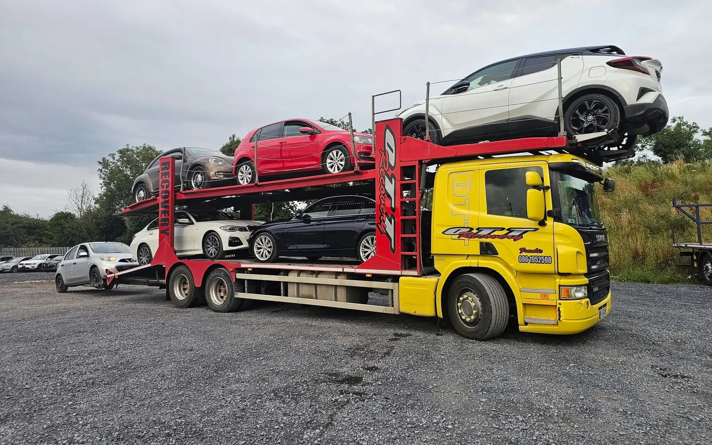
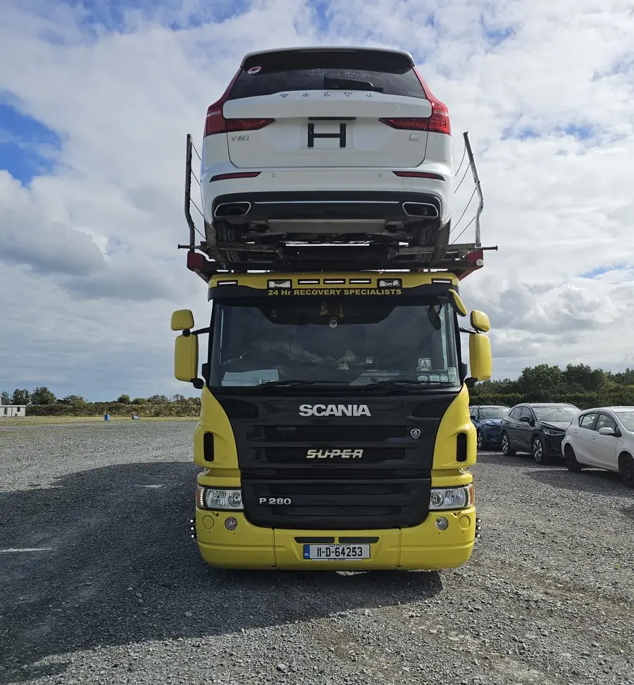

HGV drivers
wanted.
Drive our two-deck car transporter on Dublin Port collections, dealer transfers and deliveries across Ireland.
Moving cars,
not just driving.
You’ll drive our two-deck Scania car transporter, carrying up to six cars at a time for dealerships, importers and fleets.
- Collecting imported cars from Dublin Port
- Dealer-to-dealer transfers and auction runs
- Delivering cars to dealerships, compounds and customers across Ireland
- Loading, securing and unloading vehicles with care
- Checking and recording each car’s condition at collection and delivery

The essentials.
- Full HGV driving licence (tell us your category)
- Driver CPC card
- Digital tachograph card
- A good driving record
- A careful approach to high-value vehicles
- Car transporter experience is a plus
A local firm
with steady trade work.
- Over 20 years in vehicle recovery and transport
- Varied work: the port, dealerships and nationwide runs
- A small local team based in Rush, North County Dublin
- Well-known vehicles: our yellow Scania gets noticed
Apply to drive
for OTT.
Fill this in and press send — it opens a pre-written email to our team. Add your CV as an attachment before you send it.
Prefer to talk first? Call 086 195 2598.
About the job.
What licence do I need?
A full HGV driving licence, plus a Driver CPC card and a digital tachograph card. Tell us your licence category when you apply.
Do I need car transporter experience?
It’s a plus. Tell us about your experience loading and securing vehicles when you apply.
Where is the job based?
Our base is in Rush, North County Dublin. Runs go to Dublin Port, dealerships and customers across Ireland.
How do I apply?
Use the form on this page, or email your CV to info@ottrecoverybreakdown.ie. You can also call 086 195 2598 for a chat.
Ready to drive
for OTT?
HGV drivers for our car transporter. Rush, Co. Dublin.